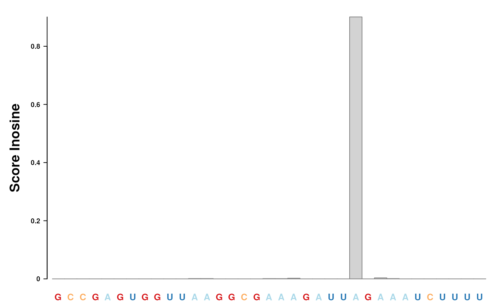

SequenceData,
SequenceDataSet, SequenceDataList, Modifier or
ModifierSet object.R/AllGenerics.R, R/Modifier-viz.R, R/ModifierSet-viz.R, and 3 more
plotData.RdWith the plotData and plotDataByCoord functions data
from a SequenceData, SequenceDataSet, SequenceDataList,
Modifier or ModifierSet object can be visualized.
Internally the functionality of the Gviz package is used. For each
SequenceData and Modifier class the getDataTrack is
implemented returning a DataTrack object
from the Gviz package.
Positions to be visualized are selected by defining a genomic coordinate,
for which x has to contain data.
plotData(x, name, from = 1L, to = 30L, type, ...) plotDataByCoord(x, coord, type, window.size = 15L, ...) getDataTrack(x, name, ...) # S4 method for Modifier,GRanges plotDataByCoord(x, coord, type = NA, window.size = 15L, ...) # S4 method for Modifier plotData( x, name, from, to, type = NA, showSequenceData = FALSE, showSequence = TRUE, showAnnotation = FALSE, ... ) # S4 method for Modifier getDataTrack(x, name = name, ...) # S4 method for ModifierSet,GRanges plotDataByCoord(x, coord, type = NA, window.size = 15L, ...) # S4 method for ModifierSet plotData( x, name, from, to, type = NA, showSequenceData = FALSE, showSequence = TRUE, showAnnotation = FALSE, ... ) # S4 method for SequenceData,GRanges plotDataByCoord(x, coord, type = NA, window.size = 15L, ...) # S4 method for SequenceData plotData( x, name, from, to, perTranscript = FALSE, showSequence = TRUE, showAnnotation = FALSE, ... ) # S4 method for SequenceData getDataTrack(x, name = name, ...) # S4 method for SequenceDataList getDataTrack(x, name = name, ...) # S4 method for SequenceDataList,GRanges plotDataByCoord(x, coord, type = NA, window.size = 15L, ...) # S4 method for SequenceDataList plotData( x, name, from, to, perTranscript = FALSE, showSequence = TRUE, showAnnotation = FALSE, ... ) # S4 method for SequenceDataSet getDataTrack(x, name = name, ...) # S4 method for SequenceDataSet,GRanges plotDataByCoord(x, coord, type = NA, window.size = 15L, ...) # S4 method for SequenceDataSet plotData( x, name, from, to, perTranscript = FALSE, showSequence = TRUE, showAnnotation = FALSE, ... )
| x | a |
|---|---|
| name | Only for |
| from | Only for |
| to | Only for |
| type | the data type of data show as data tracks. |
| ... | optional parameters:
|
| coord | coordinates of a positions to subset to as a
|
| window.size | integer value for the number of positions on the left and
right site of the selected positions included in the plotting (default:
|
| showSequenceData |
|
| showSequence |
|
| showAnnotation |
|
| perTranscript |
|
a plot send to the active graphic device
if (FALSE) { plotData(msi, "2", from = 10L, to = 45L) }